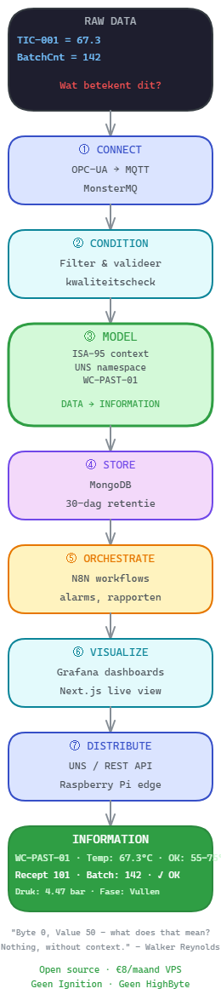

Van raw sensordata naar actionable information — zonder Ignition, zonder HighByte, zonder €40.000/jaar licentiekosten.
"Byte 0, Value 50 — what does that mean to a data lake? Nothing, without context."
— Walker Reynolds, IIoT University (originator van het Unified Namespace concept)Elke PLC publiceert data. Maar data zonder context is ruis. Wat jouw historian iedere seconde ontvangt, is dit:
De waarde 67.3 is nutteloos zonder te weten: van welke machine? In welke engineering unit? Wat is normaal? Wat is een alarm? Context is het stuk dat AVEVA je probeert te verkopen voor €40.000 per jaar.
Van OPC-UA sensordata tot actionable information — alles op één €8/maand VPS.

Koppel aan de databron van de PLC of SCADA. OPC-UA is de industriestandaard: elk modern systeem spreekt het. MonsterMQ fungeert als OPC-UA client én MQTT broker in één container — geen aparte bridge nodig.
OPC-UA (asyncua) MonsterMQ MQTT Modbus (toekomstig)Verwijder dubbele waarden, filter ruis, converteer engineering units. Een PLC publiceert 1x per seconde — maar niet elke waarde is anders. Alleen gewijzigde waarden opslaan bespaart 60–80% opslagruimte.
MonsterMQ flow engine N8N validatieDit is waar data information wordt. Gebruik ISA-95 hiërarchie (Enterprise → Site → Area → WorkCenter → Tag) om elke sensorwaarde te contextualiseren. Een JSON model beschrijft elke machine: wat het doet, wat normaal is, welke alarms er zijn, en hoe het zich verhoudt tot andere machines.
Walker's vier namespace typen: Definitional (wat is het?), Functional (wat doet het?), Informative (wat meet het?), Ad-hoc (tijdelijk/batch).
ISA-95 JSON model UNS (Unified Namespace) MQTT topic structuurMongoDB slaat alle MQTT berichten op in de plc_data collectie met automatische timestamp. Retentie 30 dagen. Geen InfluxDB nodig — MongoDB handelt gemengde data (sensorwaarden, batch records, alarms, shift logs) in één collectie.
N8N automatiseert fabrieksoperaties: productieorders starten, alarm-notificaties naar Teams sturen, barcode-scans verwerken, shift rapporten mailen. In de IDP stack zijn 6 workflows gedefinieerd voor een complete packaging lijn.
N8N workflows MonsterMQ webhooks Teams / emailGrafana voor time-series analyse en ad-hoc queries (via FastAPI JSON datasource). Next.js voor live dashboards die elke 5 seconden refreshen — ideaal voor operators op de werkvloer. Grafana template variables: één dashboard voor 50 machines.
Grafana Next.js FastAPIHet Unified Namespace (UNS) maakt data beschikbaar voor elk systeem dat het nodig heeft — ERP, MES, cloud, edge. MonsterMQ op een Raspberry Pi stuurt lokale data door naar de VPS. REST API voor externe integraties. MQTT retain flag voor startup states.
UNS / MQTT REST API Raspberry Pi edge| Oplossing | Kosten/jaar | OPC-UA | Open Source | Leerbaar |
|---|---|---|---|---|
| AVEVA Connect | €40.000 | ✓ | Nee | Vendor cursus |
| Ignition + HiveMQ | €6.500–€20.000 | ✓ | Nee | Vendor cursus |
| Walker Reynolds (IIoT Univ.) | Cursus €X | ✓ (theorie) | Vendor tools | WHY & principes |
| IDP Open Source Stack | €96/jaar (VPS) | ✓ | 100% | HOW — live demo |
Sluit aan bij de community van PLC/SCADA engineers die hun eigen Industrial Data Platform bouwen — stap voor stap, open source, zonder vendor lock-in.